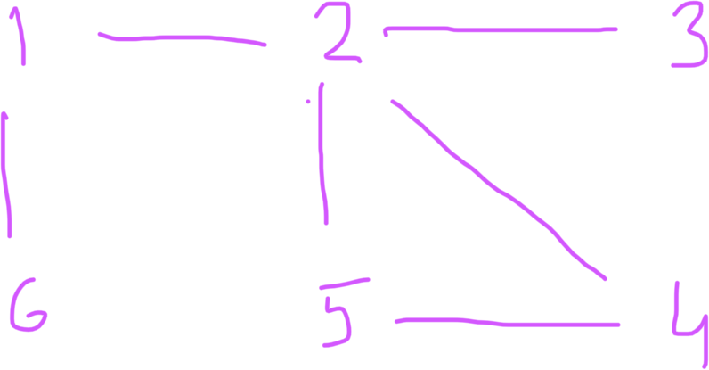
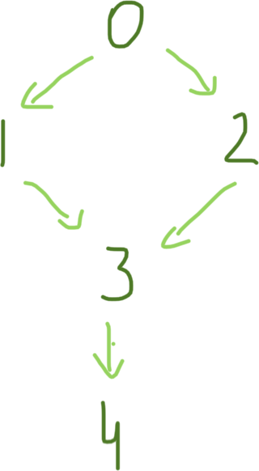

class: center, top <br><br> ## CSCI-UA 480: APS ## Algorithmic Problem Solving <br> ## Graphs .author[ Instructor: Joanna Klukowska <br> <!-- created based on materials for this class by Bowen Yu and materials shared by the authors of the textbook Steven and Felix Halim --> ] .license[ Unless noted otherwise all content is released under [CC BY 4.0](https://creativecommons.org/licenses/by/4.0/). ] --- ## Graphs: terminology and definitions - graphs consist of _nodes_/_vertices_ and _edges_ -- - a _path_ leads from one node to another through the edges in the graph; the _length of a path_ is the number of edges in it; a _cycle_ is a path in which the first and last nodes are the same -- - a graph is _connected_ if there exists a path between every pair of nodes; connected parts of a graph are called its _connected componenets_ -- - a _tree_ is a connected graph with no cycles -- - a _directed graph_ contains edges that can be traversed in one direction -- - a _weighted graph_ contains edges that have _weights_ assigned to them -- - two nodes are _adjacent_ (or are _neighbors_) if there is an edge between them -- - the _degree_ of a node is the number of nodes that are adjacent to it; the sum of all degrees in a graph is always equal to $2m$ where $m$ is the number of edges in the graph -- - in a _regular_ graph the degree of each node is the same, $d$ -- - in a _complete_ graph the degree of each node is $n-1$ where $n$ is the number of nodes -- - in a directed graph the _indegree_ of a node is the number of edges that end at that node and the _outdegree_ is the number of edges that start at that node -- - a graph is _bipartite_ if is possible to color its nodes using two colors in such a way that no adjacent nodes have the same color --- ## Graph Representations __Adjacency List__ - each node is assigned an _adjacency list_ of nodes that are adjacent to it - the adjacency list can be stored as a linked list or array -- __Adjacency Matrix__ - it's a matrix indicating the edges of the graph - the adjacency matrix can be stored as a 2D array in which `adj[a][b]` indicates if there is an edge between nodes `a` and `b` - for undirected graphs, `adj[a][b]=adj[b][a]` - for unweighted graphs, the matrix can store binary information - for weighted graphs, the matrix values indicate the weight of the edge - drawback: uses $n^2$ elements and most of them are zero -- __Edge List__ - a list that contains all edges in the graph in some order - convenient if an algorithm needs to traverse all the edges and it is not necessary to find edges that start/end in a particular node - elements in the list a pairs of nodes indicating the end-points for each edge --- ## Graph Representations __Implicit Graph__ - graphs that are not stored using graphs data structures (like the ones in the previous slide) - used when the edge connectivity can be determined easily and/or if they can be determined using some rules - examples - A 2D grid represents a labirinth. The cells with passable corridors are marked with '.'. The cells with solid walls are marked with '#'. Each of those cells is an _implicit_ node in a graph. There is an _implicit_ edge between two nodes if the the two cells are connected along one of the four sides and they are both marked with a '.'. - A graph contains N nodes labeled 0..N. There is an edge between two nodes if a sum of their labels is even. --- ## Traversing a Graph Task: given a starting node in a graph, visit all nodes that can be reached from that node. -- - depth first search traversal (DFS) - breadth first search traversal (BFS) --- ## Depth First Search Traversal .right-column2-small[  ] - follows a single path through the graph as long as there are un-visited nodes - after it cannot find any more nodes to visit, it _returns_ to previous nodes and follows unexplored paths from them - needs to keep track of visited nodes <p> -- - what order will the DFS traversal visit the nodes in the graph on the right? -- - 1 -> 2 -> 4 -> 5 -> 3 -> 6 - 1 -> 2 -> 3 -> 4 -> 5 -> 6 - 1 -> 6 -> 2 -> 4 -> 5 -> 3 - 1 -> 6 -> 2 -> 3 -> 4 -> 5 -- - algorithm using the adjacency list of a graph, O(n+m) ``` visited[N] - boolean array with all values set initially to false dfs ( start ) if visited[start] return //already processed this node visited[start] = true //mark node as visited for n in adj[start] dfs( n ) ``` --- ## Breadth First Search Traversal .right-column2-small[ ] - visits the nodes in order of their distance from a starting node (distance = path length between nodes) - visit all nodes whose distance from the start node is 1 - visit all nodes whose distance from the start node is 2 - ... <p> -- - what order will the BFS traversal visit the nodes in the graph on the right? -- - 1 -- 2,6 -- 3,5 -- 4 (where a,b indicates that the order of does not matter ) -- - algorithm using the adjacency list of a graph, O(n+m) ``` visited[N] - boolean array with all values set initially to false queue - to store nodes to be visited bfs ( start ) visited [ start ] = true queue.push( start ) while queue is not empty node = queue.pop() for n in adj( node ) if ! visited[n] visited [n] = true queue.push( n ) ``` --- template: challenge ## Challenge Design algorithms for the following problems: - Given a node, find the length of the shortest path from that node to all other nodes in the graph. - Determine if a graph is connected or disconnected (algorithmically, not visually). - Determine if a graph is a tree (algorithmically, not visually). - Determine if a graph is bipartite. --- class:challenge ## Bottleneck <!-- UVA 11902--> .small[ From Wikipedia article [_Dominator (graph theory)_](https://en.wikipedia.org/wiki/Dominator_%28graph_theory%29) ] .right-column2-small[<img src="https://upload.wikimedia.org/wikipedia/commons/thumb/2/22/Dominator_control_flow_graph.svg/200px-Dominator_control_flow_graph.svg.png" width=200px />] In computer science, in control flow graphs, a node `d` _dominates_ a node `n` if every path from the entry node to `n` must go through `d`. Notationally, this is written as `d dom n`. By definition, every node dominates itself. .right-column2-small[ <img src="https://upload.wikimedia.org/wikipedia/commons/thumb/e/e4/Dominator_tree.svg/1920px-Dominator_tree.svg.png" width=200px /> ] In the graphs on the right, if a starting vertex is 1, then the node with label 2 is a dominator for all the nodes except 1. In a network, if a node is a dominator for many other nodes it is potentially a problem leading to bottlenecks and points of failure. <br><br> __Task__: Given a directed graph and a starting node, find the dominators of every vertex/node. --- class:challenge ## Bottleneck .small[ __Task__: Given a directed graph and a starting node, find the dominators of every vertex/node. __Input__: Each graph starts with an integer N (0 < N < 100) that represents the number of nodes in the graph. The next N lines contain N integers each. If the j-th (0 based) integer of i-th (0 based) line is ‘1’, it means that there is an edge from node i to node j and similarly a ‘0’ means there is no edge. __Ouput__: Otput 2N + 1 lines that summarizes the dominator relationship between every pair of nodes. If node A dominates node B, output ‘Y’ in cell (A, B), otherwise output ‘N’. Cell (A, B) means cell at A-th row and B-th column. Surround the output with ‘|’, ‘+’ and ‘-’ to make it more legible. Look at the samples for exact format. __Example 1__: .left-column2-small[ Input: ``` 5 0 1 1 0 0 0 0 0 1 0 0 0 0 1 0 0 0 0 0 1 0 0 0 0 0 ``` ] .right-column2-small[  ] .right-column2-small[ Output: ``` +---------+ |Y|Y|Y|Y|Y| +---------+ |N|Y|N|N|N| +---------+ |N|N|Y|N|N| +---------+ |N|N|N|Y|Y| +---------+ |N|N|N|N|Y| +---------+ ``` ] ] --- template: challenge ## Follow the Path <!--UVA 10116--> You are programming a new robot called Frank to navigate the path through a grid. Frank should be able to adjust to direction it is moving in rather than being pre-programmed. This particular robot needs to navigate through a 2D grid. At each grid location Frank receives the instructions for the instructions for its next move. The possible moves are: .small[ - N - move North (or up) - S - move South (or down) - E - move East (or right) - W - move West (or left) ] Your task now is to calculate what path Frank should take and verify that it actually took that path (otherwise you have a bug in the code that directs Frank through the grid). Example 1: .left-column2-small[ ``` F N E E S<-W E v <-W<-W W E->S S ^ v S N<-W<-W<-W W ``` ] .right-column2-large[ If Frank enters this grid at the grid location just below of the position of F, it will move west, then south, then east, then south, then west three times, then north and west two more times and finally it will exit the grid. ] --- template: challenge ## Follow the Path You are programming a new robot called Frank to navigate the path through a grid. Frank should be able to adjust to direction it is moving in rather than being pre-programmed. This particular robot needs to navigate through a 2D grid. At each grid location Frank receives the instructions for the instructions for its next move. The possible moves are: .small[ - N - move North (or up) - S - move South (or down) - E - move East (or right) - W - move West (or left) ] Your task now is to calculate what path Frank should take and verify that it actually took that path (otherwise you have a bug in the code that directs Frank through the grid). Example 2: .left-column2-small[ ``` F S E S<-W E v v ^ E->E->S N<-W v ^ N W E->E->N N W S W N ``` ] .right-column2-large[ If Frank enters this grid at the grid location just below of the position of F, it will move south, then east twice, and then it will enter a loop consisting of 8 moves. Frank will never leave this grid. ] --- template: challenge ## Follow the Path .small[ __Input__ On the first line are three integers separated by blanks: the number of rows in the grid, the number of columns in the grid, and the number of the column in which the robot enters from the north. The possible entry columns are numbered starting with one at the left. Then come the rows of the direction instructions. Each grid will have at least one and at most 10 rows and columns of instructions. The lines of instructions contain only the characters N, S, E, or W with no blanks. __Output__ There should be one line of output. Either the robot follows a certain number of instructions and exits the grid on any one the four sides or else the robot follows the instructions on a certain number of locations once, and then the instructions on some number of locations repeatedly. The sample input below corresponds to the two grids above and illustrates the two forms of output. The word “step” is always immediately followed by “(s)” whether or not the number before it is 1. .left-column2[ __Example 1__: Input: ``` 3 6 5 NEESWE WWWESS SNWWWW ``` Output: ``` 10 step(s) to exit ``` ] .right-column2[ __Example 2__: Input: ``` 4 5 1 SESWE EESNW NWEEN EWSEN ``` Output: ``` 3 step(s) before a loop of 8 step(s) ``` ] ] --- </optgroup>